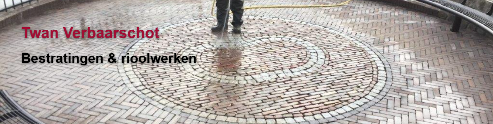
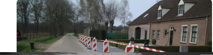

Oprit & erf
Sierbestrating met strak legverband
Voor projecten waarbij uitstraling, patroon en afwerking een grote rol spelen.
Een selectie van het soort projecten waarvoor klanten bij Verbaarschot terechtkunnen: van sierbestrating en terreinwerk tot buitenriolering en afwatering.

Voor projecten waarbij uitstraling, patroon en afwerking een grote rol spelen.
Met aandacht voor materiaalkeuze, onderhoud en praktische indeling.

Een voorbeeld van projecten waar machinale bestrating het verschil maakt.
Werk aan leidingen, kolken, controleputten en afvoer rondom woning of terrein.
Oplossingen waarbij straatwerk en waterafvoer direct goed op elkaar aansluiten.
Praktisch voor projecten waar straatwerk, afwatering en buitenriolering samenkomen.
Projecten worden degelijk uitgevoerd met oog voor detail en een verzorgde afwerking.
Waar mogelijk wordt machinaal gewerkt om snelheid en rendement te verhogen.
Van voorbereiding tot afwatering wordt gekeken naar wat technisch het beste past.
Neem contact op voor bestratingen, terreinwerk, buitenriolering of een combinatie van deze werkzaamheden.